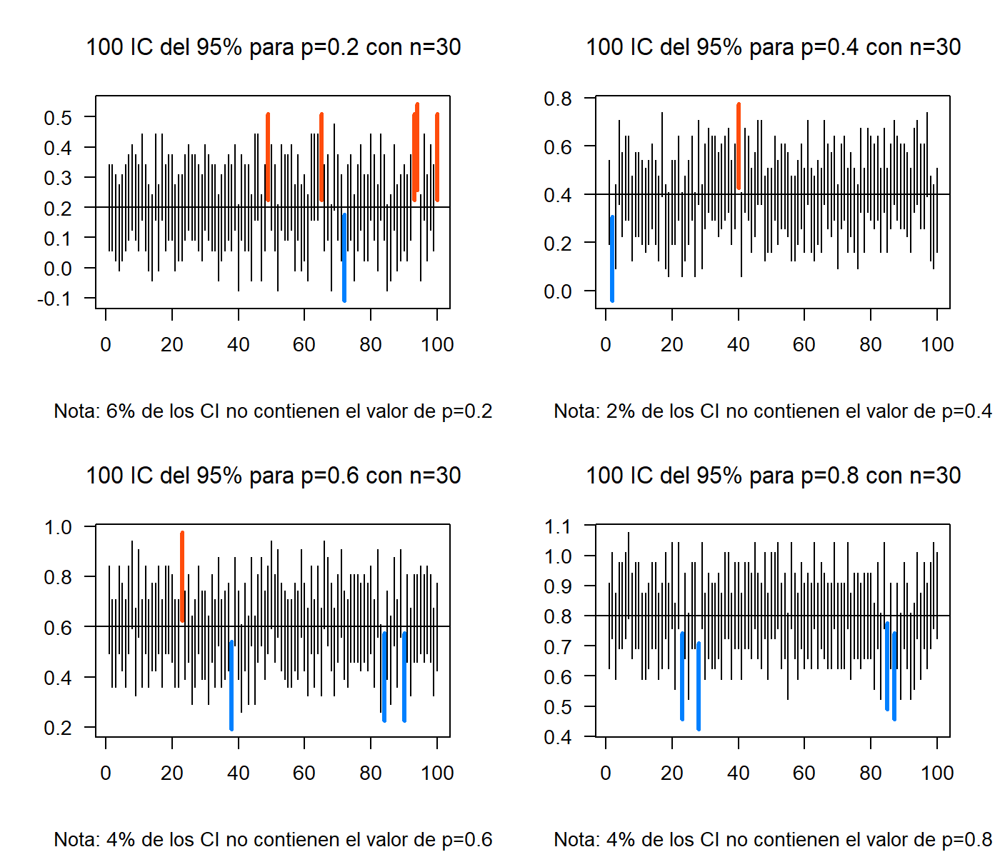
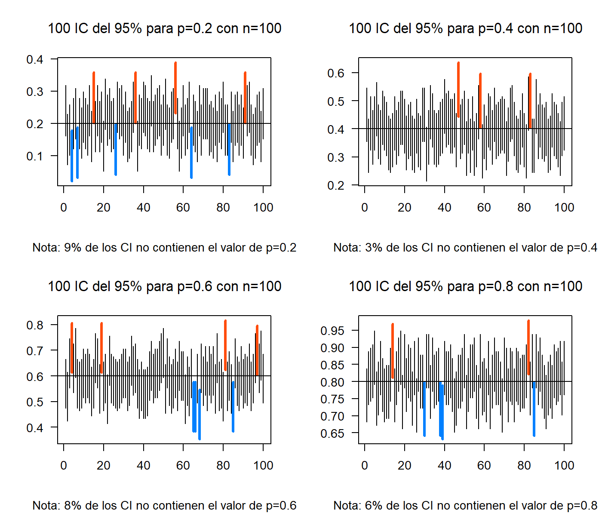

Intervalos de Confianza para un parámetro
Introducción
Hasta ahora los estimadores estudiados son puntuales, es decir, exhiben un solo valor como estimación del parámetro de interés. Pero en muchos casos esto no es suficiente. A veces se requiere de un rango de posibles valores para el parámetro de interés, es decir, un intervalo real donde se cree estará el valor del parámetro con una alta confianza.
Sea \(\theta\) un parámetro de interés y \(\hat{\theta}\) un estimador puntual de \(\theta\) en un intervalo real de la forma \((L_\hat\theta , U_\hat\theta)\) talque \((L_\hat\theta < \theta < U_\hat\theta)\), donde \(L\) y \(U\) dependen de y de la distribución de \(\hat\theta\).
Cada muestra aleatoria proporcionará un valor diferente para \(\hat\theta\) y por lo tanto valores diferentes para \(L\) y \(U\). Así, los extremos del intervalo en cuestión se convierten en variables aleatorias. El intervalo \((L , U)\) es llamado Intervalo Aleatorio. Usando \(\hat\theta\) y su distribución es posible determinar \(L\) y \(U\) tales que:
\[P(L_\hat\theta < θ < U_\hat\theta) = 1 − \alpha,\quad \alpha \in (0,1)\]
Para una muestra particular se obtiene el intervalo \((l , u)\) donde se espera esté el verdadero valor de \(\theta\), Este intervalo será llamado un Intervalo de Confianza al \(100(1 − \alpha)\%\) para \(\alpha\), además \(l\) y \(u\) son llamados Límites de Confianza.
Intervalos de confianza para la proporción
Sea \(X\) una variable aleatoria tal que \(X\sim bin(n,p)\). El Teorema Central del Límite garantiza que:
\[\cfrac{X-np}{\sqrt{np(1-p)}} \stackrel{aprox}{\underset{n \rightarrow \infty}{\widetilde{\quad\quad}}} N(0,1)\]
Un estimador insesgado para \(p\) es \(\bar{p}=X/n\), entonces:
\[\frac{X-np}{\sqrt{np(1-p)}}=\frac{n[X/n-p]}{\sqrt{np(1-p)}}=\frac{X/n-p}{\sqrt{p(1-p)/n}}\stackrel{aprox}{\underset{n \rightarrow \infty}{\widetilde{\quad\quad}}} N(0,1)\]
Entonces un intervalo de confianza para \(\hat{p}\) es de la forma:
\[\hat{p}\, \pm\, Z_{\alpha/2}\sqrt{\frac{\hat{p}(1-\hat{p})}{n}}\]
En una muestra de 85 recién nacidos, 10 presentaron riesgo de desnutrición. ¿Cuál es la proporción real de recién nacidos con riesgo de desnutrición con una confianza del 95%?
Sea \(X\) el número de recién nacidos con riesgo de desnutrición, entonces \(X\sim bin(85,p)\). Del enunciado se tiene que: \(\hat{p}=x/85=10/85=0.1176471\)
Un Intervalo de Confianza (IC) aproximado al 95% para \(p\) es de la forma: \[\frac{10}{85}\,\pm\,1.96\sqrt{\frac{(10/85)(75/85)}{85}}\,\Rightarrow\,0.1176\,\pm\,0.0685\,\Rightarrow(0.0492;0.1861)\] En conclusión, con una confianza del 95% la proporción de recién nacidos que presentan riesgos de desnutrición se estiman entre (0.0492;0.1861), o (4.92%;18.61%).
El siguiente ejercicio de simulación muestra el concepto de la probabilidad de los intervalos de confianza y la influencia de los tamaños de muestra

Cuando aumenta el tamaño de muestra los intervalos tienen menor amplitud, lo cual es lo deseado, ya que la amplitud es una medida de precisión.

En términos de la cobertura del intervalo, se espera que para cualquier valor estimado de \(p\) la probabilidad de cobertura sea cercana al nivel de confianza \(100(1-\alpha)\%\).

Este es el inconveniente que presenta esta propuesta de intervalo para la proporción llamada método Wald. En la literatura existe muchas propuestas para intervalos de confianza para la proporción, de hecho, sigue siendo un caso de estudio por varios estadísticos.
En 1934 Clopper y Pearson presentaron una propuesta para los intervalos de confianza basados en la Distribución Beta que, a su vez, está relacionada con la Distribución F, sin embargo, lo complejo de sus cálculos no le dio el protagonismo para la época. Ahora este intervalo se ha puesto a prueba gracias a los avances computacionales haciendo fácil el cálculo y entregando mejores resultados en términos de probabilidad de cobertura.
\[B(\alpha/2;\,x,\,n-x+1)<\hat{p}<B(1-\alpha/2;\,x+1,\,n-x)\]
O parametrizada con la Distribución F
\[{\displaystyle \left(1+{\frac {n-x+1}{x\,F\!\left[{\frac {\alpha }{2}};2x,2(n-x+1)\right]}}\right)^{-1}<\hat{p} <\left(1+{\frac {n-x}{(x+1)\,\,F\!\left[1-{\frac {\alpha }{2}};2(x+1),2(n-x)\right]}}\right)^{-1}}\]
En R es fácil hacer este cálculo, el primer método es hacer la fórmula con qbeta y otra forma es con el paquete PropCIs
## [1] 0.05788185## [1] 0.2057331## [1] 0.05788185 0.20573312
## attr(,"conf.level")
## [1] 0.95